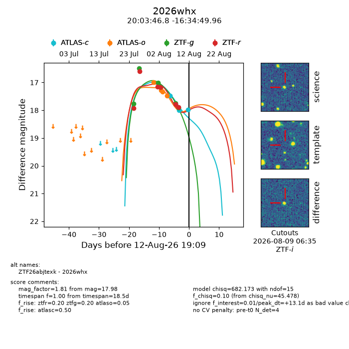
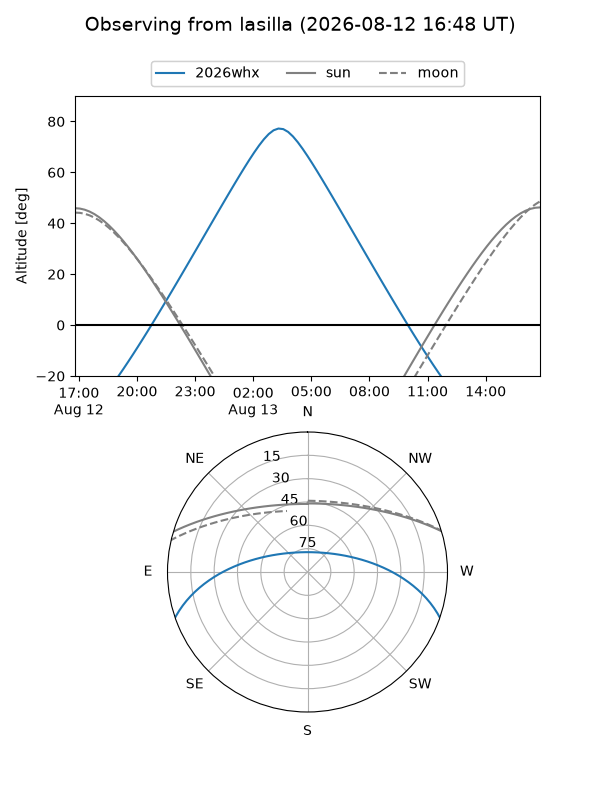
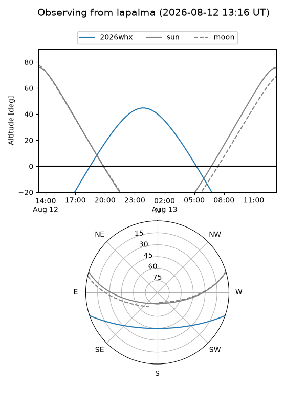
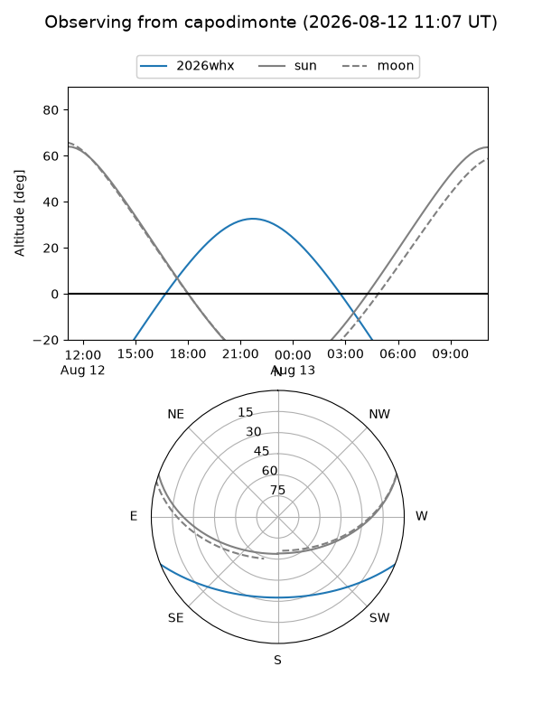
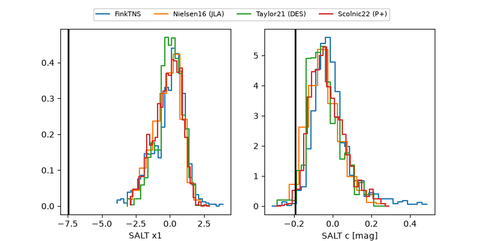

2026whx
Target 2026whx at 2026-08-12 19:12
Aliases and brokers:
FINK-ZTF: ztf.fink-portal.org/ZTF26abjtexk
Lasair-ZTF: lasair-ztf.lsst.ac.uk/objects/ZTF26abjtexk
ALeRCE-ZTF: alerce.online/object/ZTF26abjtexk
YSE-PZ: ziggy.ucolick.org/yse/transient_detail/2026whx
TNS name: wis-tns.org/object/2026whx
Direct TNS query: direct search
alt names
ZTF26abjtexk (ztf,fink_ztf)
2026whx (tns,yse)
Coordinates:
equatorial (ra, dec) = 300.9450,-16.58054
equatorial (HMS+DMS) = 20:03:46.81,-16:34:49.96
galactic (l, b) = (25.5335,-23.26086)
Flags:
TNS type: nan
peak dt: +13.1
Photometry:
last atlasc=17.98, atlaso=17.47, ztfg=17.90, ztfr=17.88
3 atlasc, 5 atlaso, 6 ztfg, 6 ztfr detections
Lightcurve

Visibility



Additional plots
